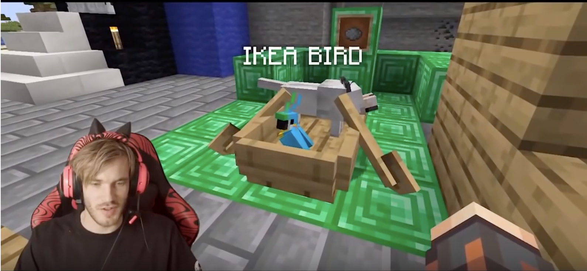
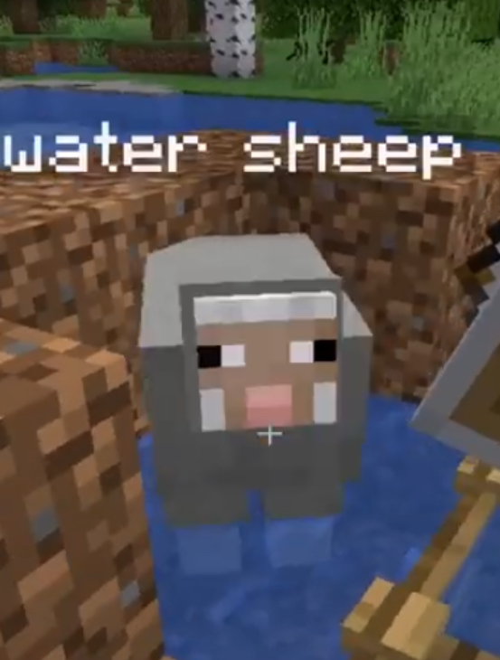
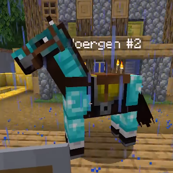
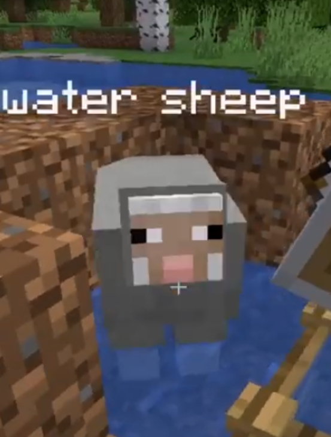
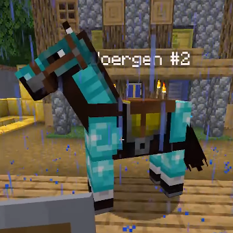

IKEA
BIRD

The blue-and-yellow macaw (Ara ararauna), also known as the blue-and-gold macaw, is a large South American parrot with mostly blue top parts and light orange underparts, with gradient hues of green on top of its head. It is a member of the large group of neotropical parrots known as macaws. It inhabits forest (especially varzea, but also in open sections of terra firme or unflooded forest), woodland and savannah of tropical South America. They are popular in aviculture because of their striking color, ability to talk, ready availability in the marketplace, and close bonding to humans.

About
Me
IKEA Bird is a pet that famous Youtuber PewDiePie found in Minecraft. He is PewdiePie's second pet that was first seen in Part 19 of his Minecraft series. He was tamed after the orignial IKEA Bird, Klaus, was accidentally killed by Pewds while he thought Zombies off-camera.
ALL
MY
FRIENDS
 



AND
THEIR
STORIES
Sven is the name of a wolf that PewDiePie had tamed Minecraft "Gaming Week" series MINECRAFT EPIC, which started in June 2019 and the tritagonist turned deutragonist of the series since Episode 20, since previous deutragonist Joergen #2 died at the end of Episode 19. He is currently the second longest living character in the series, beaten only be Llama Guy #1.
PewDiePie has stated that if Sven dies, the series dies too
Water Sheep was one of the sheep that escaped from PewDiePie's sheep pen and it eventually got stuck in a corner of a pond near his house, where it was trapped until it died. It has been theorized that Water Sheep could possibly be a different water sheep, as the river has been seen vacant before, meaning Water Sheep probably escaped, but he came back. He was constantly being threatened by Pewds and later died in part 14 after Felix attempted to use a magma block on him, suffocating Water Sheep to death. Water sheep was seen as a Godly entity by Pewdiepie, and the God of Broland but was later overthrown and replaced by the council of beetroots, signaling the end of Water Sheep's reign in Broland.
Joergen Smoergen II is the former deuteragonist of the YouTube series "MINECRAFT EPIC" and was the brother and successor of the original Joergen . He was introduced alongside Joergen in the first episode, but wasn't tamed until Episode Five, shortly after his brother's death. He was formerly one of the main characters of the series, alongside Pewds and Sven, following the death of Water Sheep. He went missing following after a raid of a Water Temple, but was later found by Felix in a later video (Part 16). He later suffocated after being placed in a 1 block wide Minecart track.